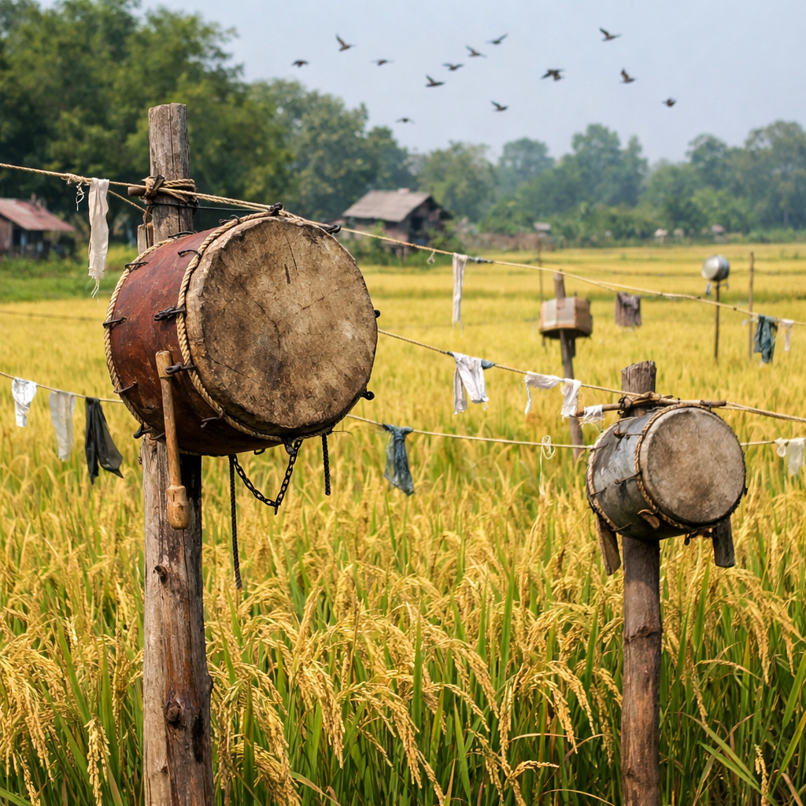
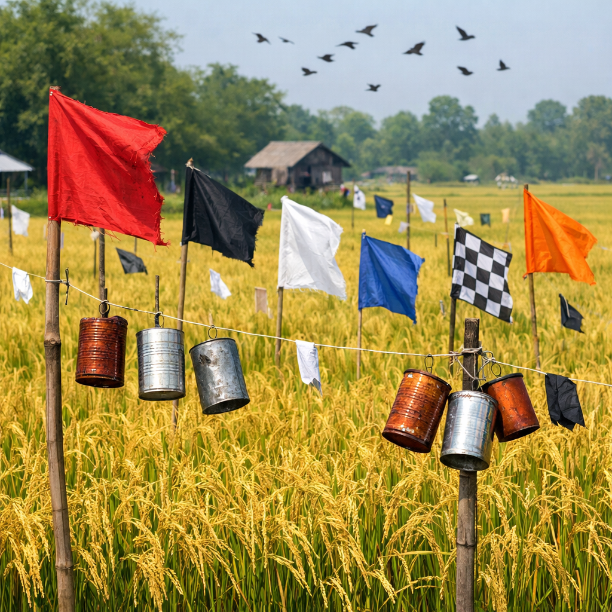
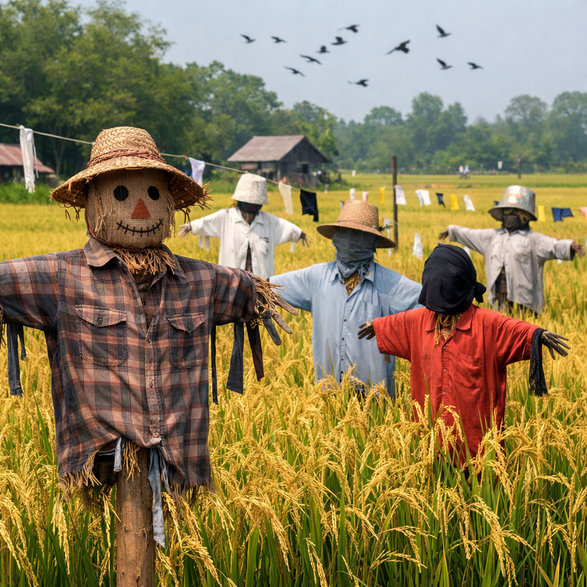

Bird Scaring
Protecting maturing rice from birds
Bird scaring is important during the last weeks before harvest. Farmers use a mix of methods to keep birds away from ripening rice and protect farm income.
Duration
Scaring is usually done for 3–4 weeks until harvesting begins.
Timing
Start bird scaring when the crop begins to head and grain begins to ripen.
Bird scaring methods
Techniques used in rice fields
Multiple deterrents help keep birds away from the crop, reducing damage to the grain during the critical maturation period.

Drums
Loud sounds drive birds away from fields. Drums are an effective, low-cost scaring tool.

Tin cans
Reflective, rattling cans make noise and movement to frighten birds from the crop.

Flags
Bright flags flap in the wind and create motion that birds avoid.

Scarecrows
Traditional scarecrows mimic people and can help deter birds when regularly moved.

Reflective tapes
Glinting strips catch sunlight and create visual disturbance to keep birds away.

Human scaring
Farmers walking through fields and making noise are the most reliable bird deterrent.

Bird scaring in action
Watch farmers use scarecrows and noise to protect rice from birds during the final crop stage.